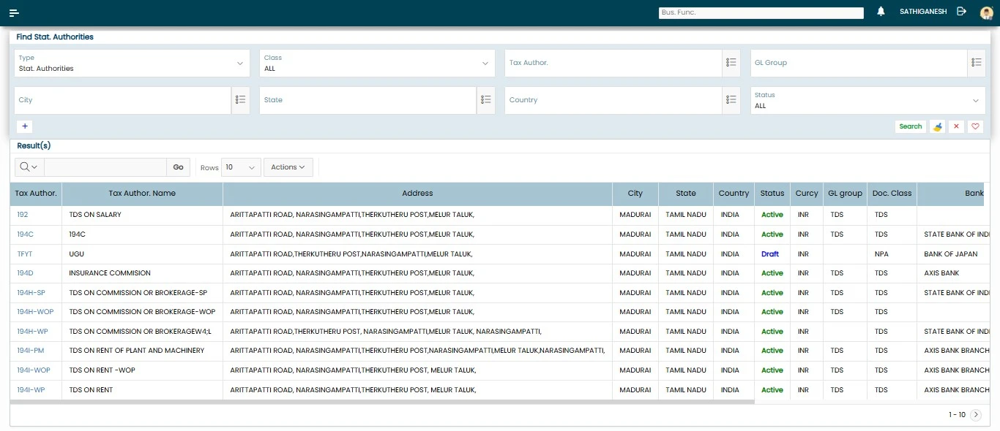
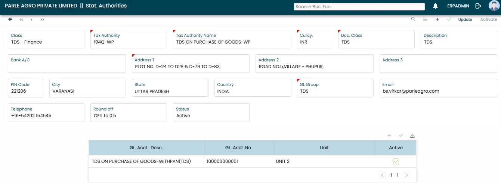
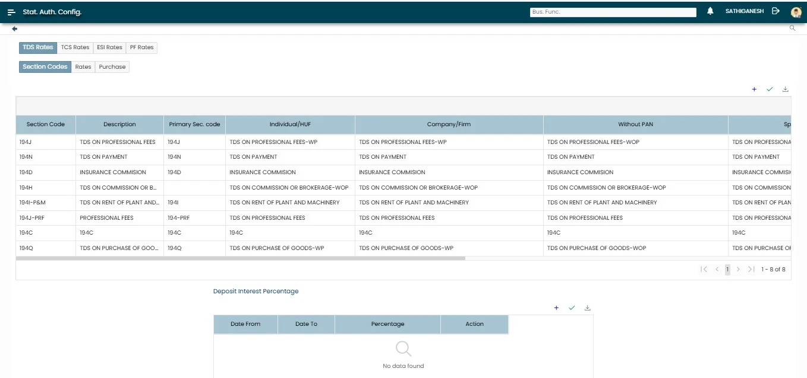
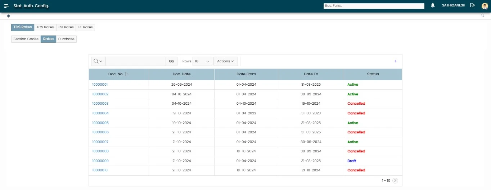
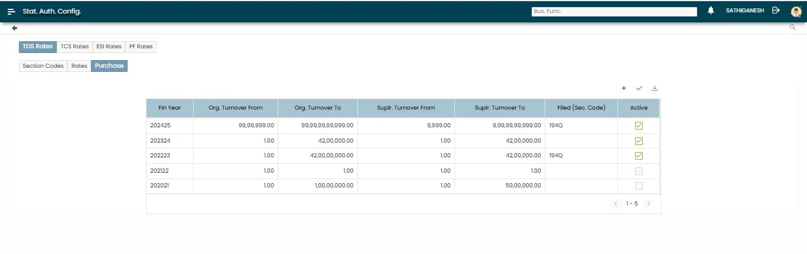
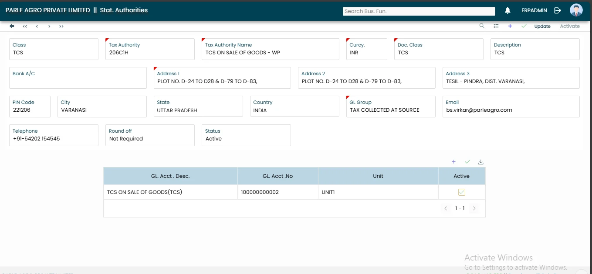
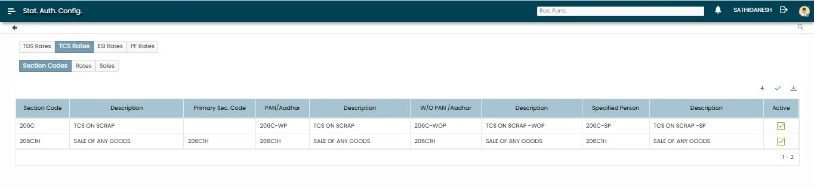
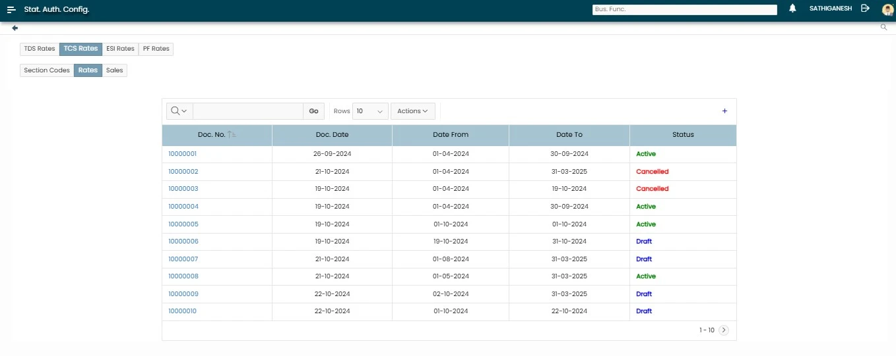
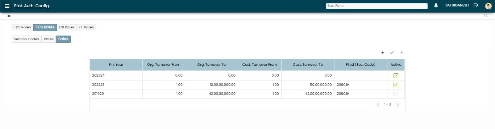

<div data-category="Financials" data-title="STAT. AUTHORITIES" data-updated="December 01, 2025" data-contributors="RoadmapIT" data-breadcrumb="Home,Financials,Stat. Authorities">
  <div class="page-content">
    <p>Tax authorities are organizations that have the official responsibility and power to collect, administer, and enforce taxes from individuals or entities. Taxes are mandatory payments or contributions that are imposed by the government on income, property, sales, or other transactions.</p>
    <p>The following are the class types available in Tax Authority.</p>
    <ol style="list-style-type: none; align-content: center">
      <li class="arrow-icon">TDS</li>
      <li class="arrow-icon">TCS</li>
      <li class="arrow-icon">ESI</li>
      <li class="arrow-icon">Tax</li>
      <li class="arrow-icon">PF</li>
    </ol>
    <p>This screen is used to create Stat. Authorities.</p>
    <h2>Navigation path</h2>
    <p class="fs-6">Setup \ Stat. Authorities</p>
    
    <ul style="list-style-type: none; align-content: center">
      <li class="mouse-icon">Search screen displays the list of Stat.Authorities with the relevant details.</li>
      <li class="mouse-icon">Click on search to filter all the records.</li>
      <li class="mouse-icon">User can filter the respective documents by entering the search parameters at the header.</li>
      <li class="mouse-icon">Using search, system displays the results relevant to the search parameters entered.</li>
      <li class="mouse-icon">On-click; the corresponding transaction record will be displayed.</li>
      <li class="mouse-icon">
        Using
        
        icon, entered search parameters can be cleared.
      </li>
      <li class="mouse-icon">
        To close the screen, use
        <i class="bi bi-x fs-4 mx-2 text-danger"></i>
        icon.
      </li>
      <li class="mouse-icon">
        By Clicking the
        <i class="bi bi-plus fs-4 mx-2 text-primary"></i>
        Add button we can create new Stat.Authorities.
      </li>
    </ul>
    <h2>TDS</h2>
    
    <ul style="list-style-type: none; align-content: center">
      <li class="mouse-icon">Enter the Class</li>
      <li class="mouse-icon">Enter the Tax Authority ID and Description.</li>
      <li class="mouse-icon">Select the Currency from LOV.</li>
      <li class="mouse-icon">Select the Doc. Class from LOV.</li>
      <li class="mouse-icon">Select the Bank Account from LOV.</li>
      <li class="mouse-icon">Enter the Address1, Address 2 and Address 3.</li>
      <li class="mouse-icon">Enter the Telephone No.</li>
      <li class="mouse-icon">Enter/Select the City from LOV.</li>
      <li class="mouse-icon">Enter the Email ID.</li>
      <li class="mouse-icon">Select a GL Group for Stat. Authorities account creation.</li>
      <li class="mouse-icon">
        Click
        <i class="bi bi-check-lg fs-4 mx-2 text-success"></i>
        to save the entry.
      </li>
      <li class="mouse-icon">Click Activate Button to activate the Tax Authority and the status will be changed from New to Active.</li>
      <li class="mouse-icon">Goto Find screen and select the types as “Stat.Auth.Config” to configure the Tax Authorities.</li>
    </ul>
    <h2>Stat. Auth. Config</h2>
    
    <h2>TDS Rates</h2>
    
    <h2>Purchase</h2>
    
    <h2>TCS</h2>
    
    <ul style="list-style-type: none; align-content: center">
      <li class="mouse-icon">Select Class as TCS</li>
      <li class="mouse-icon">Enter the Tax Authority ID and Description.</li>
      <li class="mouse-icon">Select the Currency from LOV.</li>
      <li class="mouse-icon">Select the Doc. Class from LOV.</li>
      <li class="mouse-icon">Select the Bank Account from LOV.</li>
      <li class="mouse-icon">Enter the Address 1, Address 2 and Address 3.</li>
      <li class="mouse-icon">Enter the Telephone No.</li>
      <li class="mouse-icon">Enter/Select the City from LOV.</li>
      <li class="mouse-icon">Enter the Email ID if required.</li>
      <li class="mouse-icon">Select a GL Group for Stat. Authorities account creation.</li>
      <li class="mouse-icon">Save the entry.</li>
      <li class="mouse-icon">Click Activate Button to activate the Tax Authority and the status will be changed from New to Active.</li>
    </ul>
    <h2>Stat. Auth. Config - TCS Rates - Section Codes</h2>
    
    <ul style="list-style-type: none; align-content: center">
      <li class="mouse-icon">Enter the Section Code & Description manually.</li>
      <li class="mouse-icon">Select TCS from LOV for with PAN/Without PAN/Specified Person type.</li>
    </ul>
    <h2>Rates</h2>
    
    <h2>Sales</h2>
    
  </div>
</div>
